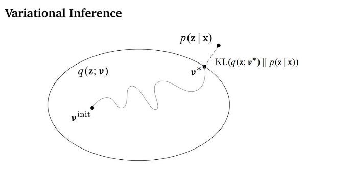

%matplotlib notebook
import matplotlib.pyplot as plt
import numpy as np
from matplotlib.patches import Ellipse
from ipywidgets import interact, FloatSlider
from IPython.display import display
7. Gaussian Mixture Models¶
References for today’s lecture:
Bishop, “Pattern recognition and machine learning”, Chapter 9
Murphy, “Machine Learning: A Probabilistic Perspective”, MIT Press, 2012, Chapter 11
7.1. Introduction¶
Unsupervised methods:
Contrary to supervised (regression, classification) in this scenario there are no labels/targets
The objective of unsupervised methods is to find structure in the data
We do this to better understand the data: find hidden causes, find shared features
7.1.1. Clustering¶
Group the data into clusters (sets) such that
“Similar” data samples go to the same cluster
Elements of one cluster are “different” from the elements of another cluster
Clustering requires a notion of similarity
7.1.2. Latent variable models (LVM)¶
Model the data using a cause and effect structure
Observed variables (effect): Data
Latent variables (cause): Hidden variables that explains the observed variables
The objective is to infer the latent given the observed
We assume properties for the latent variable, for example
Dimension of the latent is smaller than the observed → Dimensionality reduction
Latent variable is continuous and Gaussian distributed → PCA
Latent variables are not correlated (observed data might be)
7.2. Mixture model¶
In this class we focus on LVM for clustering
We assume that there are \(K\) clusters (sets)
We represent each data point
as having a categorical latent variable
This is the same as saying that \(z_i\) has a categorical prior
where \(\pi_k \in [0, 1]\) are the mixing coefficients and \(\sum_{k=1}^K \pi_k=1\)
Summary: the latent variable associates each data point with one of the \(K\) clusters
Another use for mixture models: Density estimation
7.2.1. Likelihood of the mixture model¶
We can write the likelihood as
To continue we need to specify the family \(p_k(x_i|\theta_k)\)
7.3. Gaussian mixture model (GMM)¶
In the GMM we further assume that each component of the mixture is a Gaussian/Normal distribution.
The we can write the likelihood as
where each cluster has three parameters
The centroid/prototype of the cluster is the mean of the clusters: \(\mu_k\)
The size and orientation of the cluster, given by the covariance: \(\Sigma_k\)
The contribution of the cluster to the mixture (importance): \(\pi_k\)
Fitting the GMM: Finding the best value of these parameters for all clusters given the data
Generative model: Given a value for the parameters we can sample from the GMM
Let’s explore the influence of these parameters on the “shape” of the mixture
def create_mixture(pis, mus, Sigmas, N=5000, rseed=None):
"""
pis (list of floats): mixing coefficients : cluster importance
mus (list of arrays): mean: cluster centers
Sigmas (list of arrays): covariance: cluster shape
N (int): number of points to create
"""
if rseed is not None:
np.random.seed(rseed)
points = list()
labels = list()
for k in range(len(pis)):
Nc = int(pis[k]*N)
if len(mus[k]) > 1:
x = np.random.multivariate_normal(mus[k], Sigmas[k], Nc)
else:
x = mus[k] + np.sqrt(Sigmas[k])*np.random.randn(Nc)
points.append(x)
labels.append([k]*Nc)
return np.concatenate(points), np.concatenate(labels)
data, labels = create_mixture(pis=[0.4, 0.5, 0.1],
mus=[[-1], [2], [2.5]],
Sigmas=[0.1, 0.5, 0.1])
fig, ax = plt.subplots(1, figsize=(6, 3), tight_layout=True)
ax.hist(data, bins=50);
data, labels = create_mixture(pis=[0.9, 0.1],
mus=[[-1, -1], [1, 1]],
Sigmas=[0.5*np.eye(2), [[1, -0.9],[-0.9, 1]]])
fig, ax = plt.subplots(1, 2, figsize=(6, 3), tight_layout=True)
ax[0].scatter(data[:, 0], data[:, 1], c=labels, s=10, cmap=plt.cm.coolwarm,
linewidths=0.1, edgecolors='k', vmin=0, vmax=1);
ax[1].hist2d(x=data[:, 0], y=data[:, 1], bins=30, cmap=plt.cm.Spectral_r);
7.4. Posterior probability a.k.a. picking a cluster¶
Let’s assume that we know the parameters of the mixture
Typically we want to infer the most probable cluster for a given data point
This is given by the posterior probability of \(z\) given \(x\)
Using the Bayes rule and our previous assumptions (likelihood) we have
this posterior is also called the responsibility \(r_{ik}\) of cluster \(k\) for point \(i\)
Note that it is a soft-cluster assignment
In some cases we only need a hard-cluster assignment, i.e. the single most probable cluster, which can be obtained as
because of the maximum operator we can omit the evidence and use the log likelihood
def jointGMM(data, pi, mu, Sigma):
# Assume 2 dimensional data
data_centered = data - mu
norm = pi/(2*np.pi*np.sqrt(np.linalg.det(Sigma)))
return norm*np.exp(-0.5*np.sum(np.multiply(data_centered, np.linalg.solve(Sigma, data_centered.T).T), axis=1))
fig, ax = plt.subplots(1, 2, figsize=(6, 3), tight_layout=True)
pis = [0.6, 0.4]; mus=[[-1, -1], [1, 1]];
Sigmas=[0.5*np.eye(2), [[1, -0.3],[-0.3, 1]]]
data, labels = create_mixture(pis, mus, Sigmas, rseed=0)
posterior = np.zeros(shape=(len(data), len(pis)))
for k in range(len(pis)):
posterior[:, k] = jointGMM(data, pis[k], mus[k], Sigmas[k])
posterior = posterior/np.sum(posterior, axis=1)[:, np.newaxis]
ax[0].scatter(data[:, 0], data[:, 1], c=posterior[:, 0], s=10,
cmap=plt.cm.coolwarm,
linewidths=0.1, edgecolors='k', vmin=0, vmax=1); ax[0].set_title("Soft label")
ax[1].scatter(data[:, 0], data[:, 1], c=np.argmax(posterior, axis=1), s=10,
cmap=plt.cm.coolwarm,
linewidths=0.1, edgecolors='k', vmin=0, vmax=1); ax[1].set_title("Hard label");
7.5. How do we fit the GMM?¶
We want to find the optimal point estimates of the parameters of a statistical model
Can use MLE? The log likelihood in this case is
Problem With the exception of \(K=1\), we won’t be able to find analytic expressions for the parameters
In general when we don’t have complete data, i.e. there are missing or hidden variables, the posterior does not factorize
In this case we have the latent/hidden variables \(z_i\), we need to marginalize it (sum over k) to compute the likelihood
Other problems of the MLE/MAP
Non-convex, it has local optima (Murphy 11.3.2)
Very hard to compute (NP-complete hard!)
Unidentifiability: There exist \(K!\) configurations that yield the exact same solution (label switch)
Singularities: A component may collapse to a single point (\(\Sigma \to 0\) and \(\log L \to \infty\))
What can we do?
Gradient descent with constraints
Approximate MLE estimation: Expectation Maximization (EM)
7.6. Expectation Maximization (EM)¶
The MLE solution can be computed if we “fully-observe” the data
We know \(z_i\) for each \(x_i\), i.e. we know which cluster owns \(x_i\)
The fully-observed log likelihood (FOLL) is
but in practice we do not observe \(z\) so we marginalize it by computing the expected value of the FOLL given the posterior
which is called the auxiliary function
After this we update our parameters by maximizing
and finally we do \(\theta^{\text{old}} \leftarrow \theta^{\text{new}}\) and repeat the procedure until convergence
This iterative procedure of
E-step: Estimating the expected value of the likelihood given our current parameters
M-step: Maximizing the estimator and updating our parameters
is called Expectation Maximization (EM)
EM is a general algorithm:
it can be used for other problems with non-analytical solution/non-totally observed data
it has many variants: Incremental, Variational, Monte-Carlo (Murphy 11.4.8 and 11.4.9)
7.6.1. EM updates for the GMM¶
Let’s start by defining the auxiliary function for the GMM
where \(r_{ik}^{\text{old}}\) is the responsibility given the parameters of the previous iteration
Now we maximize \(Q\) to get an estimator of the parameters
For the means
and from here we can show that the new value of the cluster mean is given by
Following the same procedure for the covariance we arrive to
Finally, we incorporate the constraint that \(\sum_k \pi_k = 1\) to arrive to
7.7. Fitting a GMM using EM¶
The following algorithms summarizes the application of EM to the GMM problem
(1) Set initial conditions
(2) Compute cluster responsibilities for each data point using
(3) Compute the new values for the parameters using
and
(4) Update the parameters \(\theta^{\text{old}} \leftarrow \theta^{\text{new}}\)
(5) If convergence criterion is met stop otherwise go back to 2
7.7.1. Example using “Old faithful” data¶
Iteration by iteration (Bishop Fig. 9.8)

Animation (wikipedia)

7.8. Practical details of EM¶
Initialization and restarts
The EM procedure is guaranteed to converge to a stationary point (local minimum/maximum or saddle point)
One can obtain a better solution using the following heuristic:
Set a number of retries
Run GMM with a random initialization
If the likelihood of this solution is larger than the previous replace best
Repeat until number of retries is achieved
Another option is to initialize with the solution from a simpler algorithms (e.g. k-means)
This can avoid catastrophic results
But it can also limit exploration
Number of clusters
The number of clusters \(K\) is a parameter set a priori by the user
How do we know what value of \(K\) is good?
Option 1: The Elbow method,
Plot log likelihood (in the validation set) as a function of \(K\)
log likelihood may keep decreasing with \(K\) (overfit)
but at some point the decrease is negligible: find the elbow of the curve

Option 2: Use Akaike Information Criterion (AIC) or Bayesian Information Criterion (BIC), or other criterion for model selection that penalizes complexity
Option 3: The Silhouette score
Convergence
EM is an iterative procedure
How many times do we repeat it?
Check log likelihood vs iteration
For example: stop if log likelihood increment is less than 0.1% wrt to previous
7.9. Special cases of GMM: The shape of the covariance¶
The covariance \(\Sigma \in \mathbb{R}^{D\times D}\), where \(D\) is the dimension of the data, defines the shape and size of the clusters
Instead of a full covariance (maximum flexibility) you could impose constraints such as
Spherical covariance: \(\Sigma = \sigma^2 \text{I}\), \(\sigma \in \mathbb{R}_{+}\)
Diagonal covariance: \(\Sigma = \vec \sigma^2 \text{I}\), \(\vec \sigma \in \mathbb{R}_{+}^D\)
fig, ax = plt.subplots(1, 2, figsize=(6, 3), sharex=True, sharey=True, tight_layout=True)
eps = np.random.randn(2, 5000)
def update(s1, s2, rho):
Sigma = [[s1**2, rho*s1*s2], [rho*s1*s2, s2**2]]
data = np.dot(np.linalg.cholesky(Sigma), eps).T
for ax_ in ax:
ax_.cla();
ax[0].scatter(data[:, 0], data[:, 1], s=10,
linewidths=0.1, edgecolors='k', vmin=0, vmax=1);
ax[1].hist2d(x=data[:, 0], y=data[:, 1], range=[[-6, 6], [-6, 6]],
bins=50, cmap=plt.cm.Blues);
interact(update,
s1=FloatSlider(min=0.5, max=2.),
s2=FloatSlider(min=0.5, max=2.),
rho=FloatSlider(min=-0.9, max=0.9));
7.10. Gaussian mixture with scikit-learn¶
From the sklearn.mixture scikit learn module
GaussianMixture(n_components=1, # Number of clusters
covariance_type='full', # Shape of the covariance
tol=0.001, # termination tolerance of EM
reg_covar=1e-06, # small number added to the diagonal of the covariance
max_iter=100, # Max number of EM iterations
n_init=1, # Number of random initializations
init_params='kmeans', # Initialization for the responsabilities (kmeans or random)
...
)
Create data to test the model
data, labels = create_mixture(pis=[0.33, 0.33, 0.34],
mus=[[-3, 0], [0, 0], [3 ,0]],
Sigmas=[[[1, 0.9],[0.9, 1]],
[[1, -0.9],[-0.9, 1]],
[[1, 0.9],[0.9, 1]]])
fig, ax = plt.subplots(figsize=(6, 3), tight_layout=True)
ax.scatter(data[:, 0], data[:, 1], s=10, cmap=plt.cm.coolwarm,
linewidths=0.1, edgecolors='k');
Find best number of clusters using the Bayesian information criterion (BIC). A model with lowest BIC is preferred
The BIC grows with \(k\) the number of parameters and number of samples \(n\) and decreases with the maximum value of the log likelihood
Try spherical, diagonal and full covariance
from sklearn.mixture import GaussianMixture
maxK = 20;
cov = 'full'
metrics = np.zeros(shape=(maxK-1, ))
for i, K in enumerate(range(2, maxK+1)):
gmm = GaussianMixture(n_components=K, covariance_type=cov, n_init=3)
gmm.fit(data)
metrics[i] = gmm.bic(data)
fig, ax = plt.subplots(figsize=(6, 3))
ax.plot(range(2, maxK+1), metrics, linestyle='--', marker='o');
ax.set_ylabel('BIC');
Inspect results
Cluster shapes and cluster assignments
uncertainty in the responsibilities
Generative results
gmm = GaussianMixture(n_components=10, covariance_type=cov, n_init=3)
gmm.fit(data)
hatr = gmm.predict(data);
hatdata = gmm.sample(n_samples=10000)
fig, ax = plt.subplots(3, figsize=(6, 8), sharex=True, sharey=True, tight_layout=True)
ax[0].scatter(data[:, 0], data[:, 1], c=hatr, s=5, cmap=plt.cm.tab20,
linewidths=0.1, edgecolors='k');
ax[0].set_title('Arg max of responsibilities')
p = gmm.predict_proba(data)
H = -np.sum(p*np.log(p), axis=1)
ax[1].scatter(data[:, 0], data[:, 1], c=H, s=10, cmap=plt.cm.Reds,
linewidths=0.1, edgecolors='k');
ax[1].set_title('Entropy of of responsibilities')
ax[2].scatter(hatdata[0][:, 0], hatdata[0][:, 1], s=5, alpha=0.1)
ax[2].set_title('Generated data')
ax[2].scatter(gmm.means_[:, 0], gmm.means_[:, 1], s=50, c='k', marker='d')
for pos, covar, w in zip(gmm.means_, gmm.covariances_, gmm.weights_):
if cov == 'full':
U, s, Vt = np.linalg.svd(covar)
angle = np.degrees(np.arctan2(U[1, 0], U[0, 0]))
width, height = 2 * np.sqrt(s)
elif cov == 'diag':
angle = 0
width, height = 2 * np.sqrt(covar)
elif cov == 'spherical':
angle = 0
width, height = 2 * np.sqrt(covar), 2 * np.sqrt(covar)
ax[2].add_patch(Ellipse(pos, 2.5*width, 2.5*height, angle, color='k', alpha=w))
7.11. Appendix: Relation to K-means¶
The K-means algorithm is a GMM with the following constraints
Spherical clusters: \(\Sigma = \sigma^2 \text{I}\), \(\sigma \in \mathbb{R}_{+}\)
All clusters have equal size: \(\sigma^2 = \sigma_1^2 = \sigma_2^2 = \ldots = \sigma_K^2\)
Uniform prior for the mixture coefficients: \(\pi_k = \frac{1}{K}\)
Hard labels are used instead of responsibilities
The multivariate normal for spherical clusters
The update rule for the responsibility
and the means $\( \mu_{k}^{\text{new}} = \frac{1}{\sum_{i=1}^N \hat r_{ik}^{\text{old}}} \sum_{i=1}^N \hat r_{ik}^{\text{old}} x_i \)$
Hence the EM for K-means reduces to
Update “hard” responsibilities
Update the cluster means
7.12. Variational mixture of Gaussians (Bishop 10.2, Murphy 21)¶
In EM the parameters are point estimates (similar to MLE and MAP)
But in a fully Bayesian LVM the parameters are distributions that we estimate (posterior) given some assumptions (priors)
but computing this integral is intractable (sum over all combinations of z)
We have two choices: stochastic approximation (MCMC) or deterministic approximation
Variational Bayes is an example of the latter
VB approximates intractable posteriors with analytical factorized distributions
{kind=link}
\(p(z|x)\) is the intractable posterior
\(q_\nu(z)\) is a family of “easier” factorized posterior
We look for \(\nu\) that maximizes a lower bound on the KL divergence between posteriors
This topic is fully explored in INFO320!
7.12.1. Priors for the GMM¶
In GMM we set priors for the weights \(\pi\), means \(\mu\) and covariance \(\Sigma\)
For \(\mu\) we use a normal prior
For \(\Sigma\) we use Wishart (covariance) or a mix between LKJ (correlation) and half normal (variance)
For the weights a Dirichlet prior is used
Recap on Dirichlet distribution
Two parameters: K (number of categories) and \(\alpha_k\) concentrations
Its support is the simplex: \(x_1, x_2, \ldots, x_K\), \(x_k \in [0,1]\) and \(\sum_k x_k = 1\)
By setting the concentration (hyperparameter) we can choose between have equally important clusters or a few active clusters
{kind=link}
Example: Variational GMM
Using a large number of clusters \(K\) but with a small concentration \(\alpha_k = 0.01\)
Clusters with negligible concentration are not plotted
7.12.2. Variational GMM with scikit-learn¶
BayesianGaussianMixture(...,
weight_concentration_prior_type='dirichlet_process',
weight_concentration_prior=None,
mean_precision_prior=None,
mean_prior=None,
degrees_of_freedom_prior=None,
covariance_prior=None,
...
)
BayesianGaussianMixture?
from sklearn.mixture import BayesianGaussianMixture
data, labels = create_mixture(pis=[0.33, 0.33, 0.34],
mus=[[-3, 0], [0, 0], [3 ,0]],
Sigmas=[[[1, 0.9],[0.9, 1]],
[[1, -0.9],[-0.9, 1]],
[[1, 0.9],[0.9, 1]]])
gmm = BayesianGaussianMixture(n_components=10 ,
weight_concentration_prior_type='dirichlet_distribution',
weight_concentration_prior=10.,
covariance_type="full", max_iter=1000, n_init=5)
gmm.fit(data)
hatr = gmm.predict(data)
print(np.unique(hatr))
hatdata = gmm.sample(n_samples=10000)
fig, ax = plt.subplots(3, figsize=(6, 8), sharex=True, sharey=True, tight_layout=True)
ax[0].scatter(data[:, 0], data[:, 1], c=hatr, s=5, cmap=plt.cm.tab20,
linewidths=0.1, edgecolors='k');
ax[0].set_title('Arg max of responsibilities')
p = gmm.predict_proba(data)
H = -np.sum(p*np.log(p), axis=1)
ax[1].scatter(data[:, 0], data[:, 1], c=H, s=10, cmap=plt.cm.Reds,
linewidths=0.1, edgecolors='k');
ax[1].set_title('Entropy of of responsibilities')
ax[2].scatter(hatdata[0][:, 0], hatdata[0][:, 1], s=5, alpha=0.1)
ax[2].set_title('Generated data')
ax[2].scatter(gmm.means_[:, 0], gmm.means_[:, 1], s=50, c='k', marker='d')
for pos, covar, w in zip(gmm.means_, gmm.covariances_, gmm.weights_):
U, s, Vt = np.linalg.svd(covar)
angle = np.degrees(np.arctan2(U[1, 0], U[0, 0]))
width, height = 2 * np.sqrt(s)
ax[2].add_patch(Ellipse(pos, 2.5*width, 2.5*height, angle, color='k', alpha=w))
7.13. More material¶
EM for mixture of Bernoulli distributions: Bishop 9.3.3
EM for mixture of student-t distributions: Murphy 11.4.5
Online EM: Murphy 11.4.8
GMM with priors (MAP): Murphy 11.4.2.8